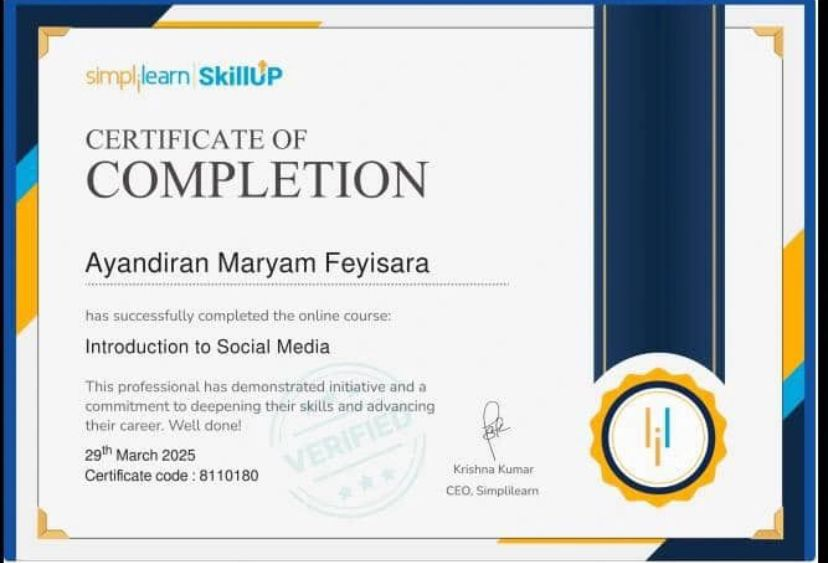

Hi, I'm Maryam
I help brands and creators turn QUIET pages into pages people NOTICE

About Me
I'm Ayandiran Maryam, a Social Media Manager helping brands and creators increase visibility, engagement and followers through strategic content and consistent online presence. As a student with a strong interest in marketing and creativity, I bring curiosity, attention to detail, and a problem-solving mindset to every project. I don't just post content, I focus on creating content that connects with audiences, encourages engagement and supports business goals. I'm reliable, easy to work with and committed to helping brands grow online.
My Expertise
Soft Skills
- Consistency
- Communication
- Creativity
- Attention to Details
- Time Management
- Adaptability
Hard Skills
- Social Media Management
- Community Management
- Copywriting & Caption Writing
- Content Planning
- Analytics Tracking
- Meta Business Suite
Services I Offer
Social Media Management
I help brands and creators stay consistent and intentional online managing pages, scheduling posts and keeping your presence active and engaging.
Community Management
I build and nurture real connections with your audience, respond to comments and messages and create a sense of community around your brand or page.
Content Creation
From visuals to captions, I create content that reflects your brand's or personal voice, tells your story and connects with your audience.
Content Planning
I organize and plan your content ahead of time, ensuring every post aligns with your goals and maintains a clear, cohesive identity.
Professional Credentials

Tools I Use
Project
Social Media Content Plan - Aura Fashion Brand
(Mock Project)
I created a comprehensive 30-day content calendar for a fictional fashion brand to demonstrate expertise in social media management. This project includes:
- Content planning and strategy
- Content pillars and themes
- Posting schedules optimized for engagement
- Campaign goals and KPIs
- Content ideas for Instagram, TikTok, Pinterest, and Facebook
Case Studies
Case Study 1
Facebook (Personal Brand)
I create and manage content focused on relatable and engaging posts. I write captions, design content and interact with my audience to build engagement and consistency.


Case Study 2
LinkedIn (Personal Brand)
I create and share content focused on growth, visibility and professional storytelling. I focus on writing engaging posts and building meaningful interactions.


Let's grow your online presence
Ready to build your online presence and turn your followers into a community? Let's talk about your next project.